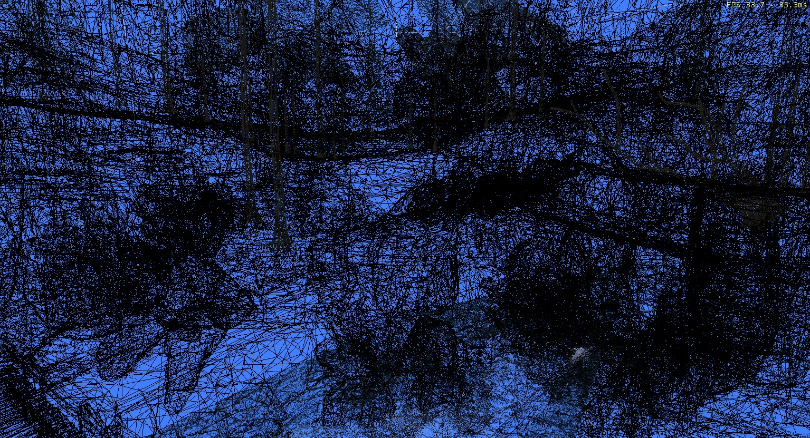
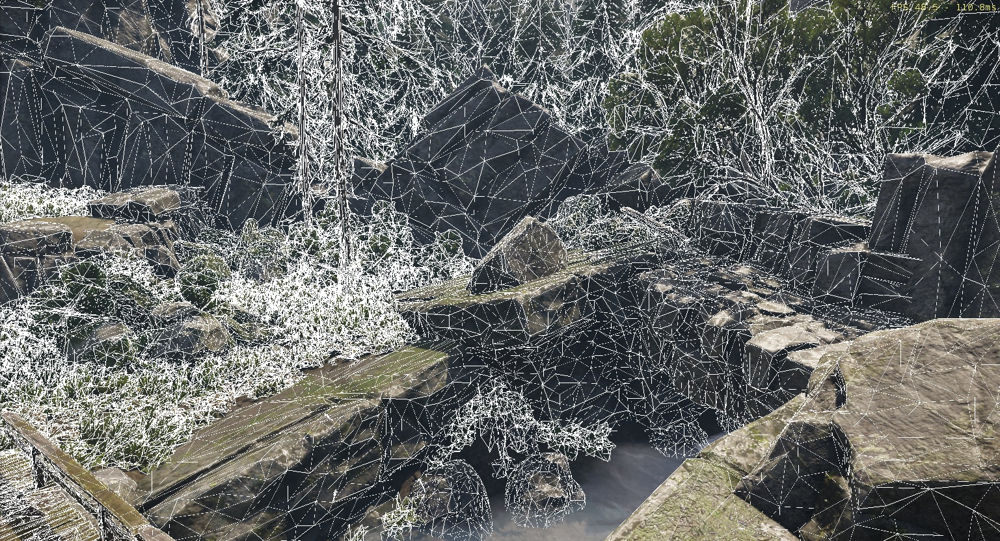
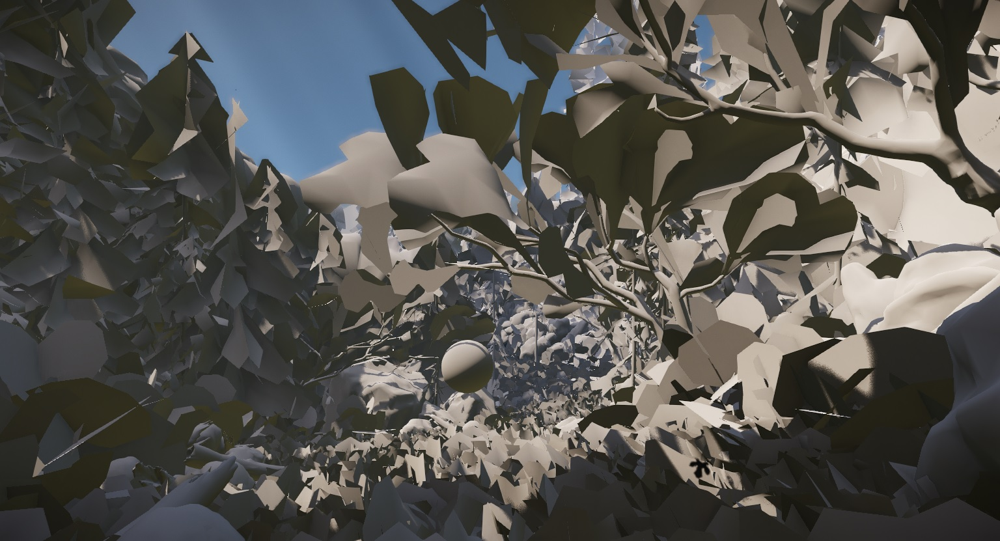
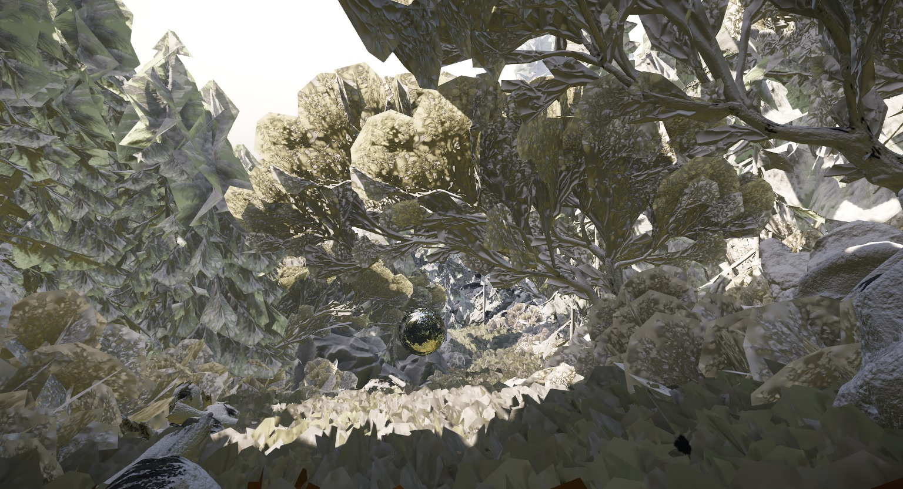
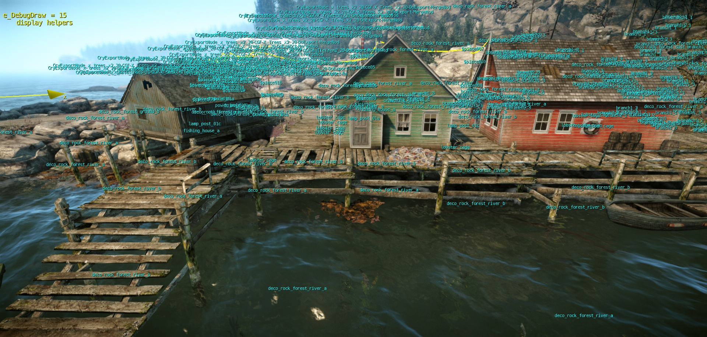
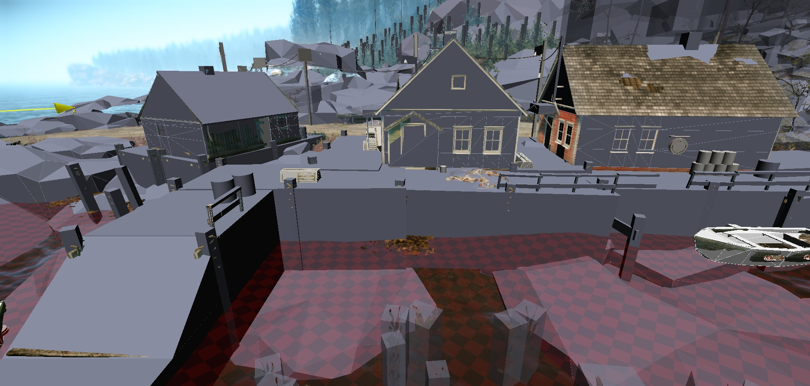
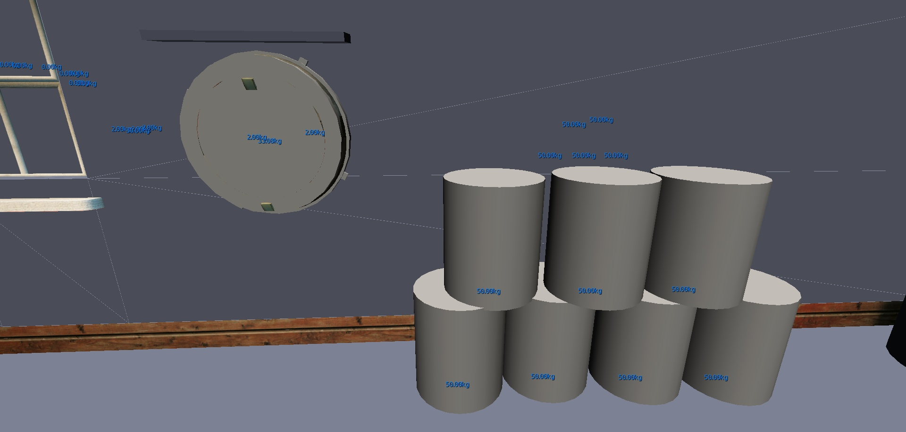

Overview
This topic describes the debug views that are useful for debugging art assets. Enter the console command in the console to activate the mode and display the info.
Wireframe
Console command: r_wireframe 1
This will draw the entire scene in wireframe, including objects hidden from view. (Can over complicate a busy scene).

Console command: r_showlines 2
This view will overlay wireframe only on the front facing geometry. Anything behind doesn't get rendered.

Both of these images are of the exact same scene, but visually r_showlines is easier on the eye.
Default Material Views
Console command: e_DefaultMaterial = 1
Applies a uniform flat grey material to every surface in the game.

Console command: r_TexBindMode = 6
Applies a uniform flat grey material with normal map information, to every surface in the game.

Helpers
Console command: e_debugdraw 15
This debug draw shows all exported helpers linked to the geometry in 3ds Max, like grab helper, touch bending helper, etc.

Physics Mesh
Console command: p_draw_helpers 1
This debug draw shows physics proxy meshes additionally to the render geometry.

Mass, Joints, Detailed Joint Status Information
Console command: p_debug_joints 1
This debug draw shows the mass of objects in kg and the joint linked to the object in 3ds Max. To display joints you have to activate p_draw_helpers 1 first.
